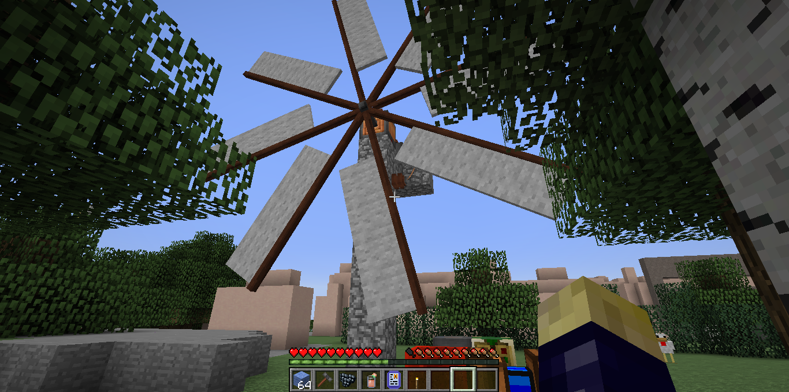

Who is in charge? How do I get help if I need it?
In a classroom space of course that's the teacher's role. In a remote
learning session this should still apply, but surprisingly there are
still occasions where I've signed in to deliver content and found I
can't access basic functionality like sharing my screen, setting up
and assigning breakout rooms, and so on. A little frustrating, but
eventually you learn to manage.
No such issues in our two Minecraft project examples, anyway.
In both cases I set up the server, generated the world, configured the
access rights and assigned my player god-tier privileges. Flying,
teleporting, conjuring stacks of esoteric resources into being with a
flourish of my typing hand ... Not a problem.
But is that all? If like me you've suffered at the hands of an educator
with an authoritarian streak paired with no-better-than-average domain
knowledge you'll be aware that no, it certainly is not.
Is the leader - teacher, tutor or whatever - good at reading the room?
Are they paying attention to mood, engagement and activity? Do they know
enough about what they're doing to command the required level of
attention and collaboration? Participants may not be fooled by a string
of buzzwords - you just try convincing a room full of gifted and
talented ten-year-olds that you know as much as they do about Minecraft,
let alone that you know more and hence they should be listening to you!
Discipline
One of the dangers of using a game environment for learning is that
gaming behaviours tend to surface. The focus of our Teats Hill session
was meant to be exploring and improving the park, but predictably there
were minor disagreements among participants leading to some trash
talk in chat. Luckily we were able to spot this and remove the
offenders immediately for a short time-out and a talk about how not
only is that not appropriate in a learning session, it's also not okay
in gaming as a whole. Did the lesson stick? We have no way of knowing,
but we can hope.
Delegation
We had expected, given Minecraft's popularity with this age group, that
all the students would be fairly expert. As it turned out we had one
who hadn't played much before and spent the early part of the session
finding their feet.
What's interesting is how quickly they got to grips with the mechanics
and started advising fellow players on how to make things happen, to
the point that when we found ourselves struggling to keep up with
requests for resources we were able to allocate them the higher-
level privileges to support their friends. We were a little worried that
perhaps the responsibilty would make the session less enjoyable for them,
but they were very happy to become the group's 'foreman'.
Flexibility

In complete contrast, another student was not only a very experienced
player, but also deeply familiar with the modified environment we'd
created and wanting to work at an advanced level with some of the
in-game technology.
Luckily we had anticipated this possibility and had some assets
prepared, a few elements half-built and additional materials in caches
around the map for them to find.
Given their level of expertise it might have
seemed to make more sense to give them admin rights, but that wouldn't
have worked nearly as well. Skills do not always equal leadership, or
support, and in this case it was far more productive to allow them to
work separately at a higher level.
As the people in charge, of course we could have insisted they stay
with the group and stick to the assigned activities. However that would
have made the session far less engaging for them, and increased
the chances of them becoming disruptive.
A slightly different scenario was our explorer - another independent
soul who wasn't engaged for long by the set activities and decided to
roam the map to see where they could get to. They quickly found
themselves outside the limits of the area we'd modelled for the session,
which meant there were only featureless clay blocks after the first few minutes.
When they eventually found themselves completely lost with no landmarks
to guide them, that's when they asked for help and we were able to
teleport them back. They went on to repeat this exercise in several
different directions! We noted for next time that we'd make sure to
generate the game world with caverns, mines and caches so
explorers would have tasks and resources to occupy them, as well as regular
teleport or transport terminals to help them get back to the group.
What if things go wrong?
It helps to scope out all the things that could possibly happen and
plan accordingly, but even that doesn't necessarily prepare you for
the things that come up. For example, nowhere on my risk register was
"Tutor accidentally throws bucket of lava over student" ...
Our preparations fortunately did include instant respawn
safely up up in the floating classroom, along with the game rule 'Keep
Inventory On' ensuring that everything they'd made or found up to that
point would be saved.
This is a point that's relevant to all risk planning - the actual cause
isn't necessarily the thing you need to suppress, and often these can be
outside your control. Medical emergencies, for example, or natural
disasters. What matters is how well you're equipped to manage or
mitigate the impact.
Summary - what we learned
Most of our findings are documented in the project report, but to
recap the most important one: Minecraft is a legitimate and effective
tool for delivering a lesson, and all the more if the game world has been
modelled and populated with clear learning outcomes in mind.
The next point would be, this isn't just an excuse to play - for students
or for tutors! There was a great deal of preparation involved in
designing the behavioral study, the field trip activities, and the
questionnaires for educators, students and parents.
The field trip is an essential component, helping to ground the students
in a sense of the real place and what already exists. The in-game
session by itself wouldn't have been effective, although it would still
have been fun.
We'd love to work with schools and other organisations to
deliver this session to more groups - if that sounds like something
you'd be interested in,
please get in touch.
Credits
- Behavioural study design and management: Leigh Cooper
- Minecraft world design and modelling: Millie Rolfe and Lucy Knight
- Bespoke Minecraft modpack curation: Millie Rolfe and Cedric Ekhert
... and special thanks to ...
-
Plymouth City Council for fully funding and supporting this project
through the Data Play programme. Special mentions to Tom Westrope for
feedback and coaching, and Ashley Todd for education and environment
department liaison.
-
Joel Mills
at ilearningUK for world building and admin advice.
- Prince Rock Primary School teachers, Year 10 pupils and ICT department.